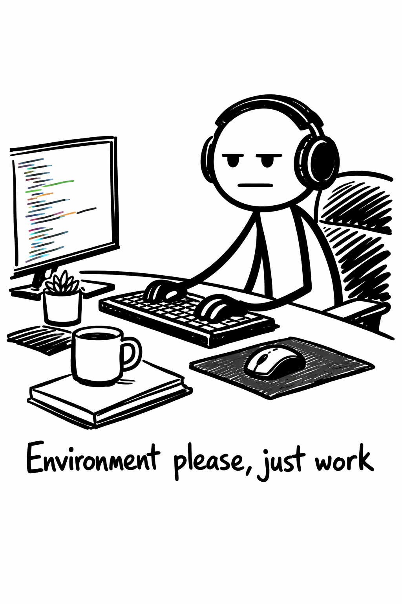
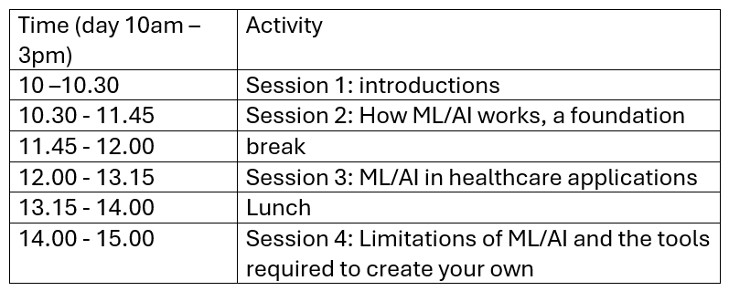

Introductions
Last updated on 2026-07-07 | Edit this page
Estimated time: 30 minutes
Overview
Questions
- “What ML/AI tools are you already aware of in healthcare, and what is your immediate gut reaction to them optimism, skepticism, or anxiety?”
- “Where do you think AI can make the biggest impact in your day-to-day workflow: reducing paperwork or assisting in patient diagnosis?”
Objectives
- Establish a shared baseline of understanding regarding the current hype versus the reality of AI in healthcare.
- Uncover the audience’s existing biases, fears, or enthusiasm about machine learning.
- Set expectations that this workshop is about bridging the gap between data science and clinical utility.
Welcome
Welcome, everyone, to today’s workshop. Whether your background is in medicine, data science, administration, or research, you are in the right teams meeting. we are all at different stages in our AI/ML journey. As we all have a different set of experiences and have varying prospective when it comes to what we expect from ML/AI For example:
- If you are a clinician, you speak the language of patient care, workflows, and clinical utility.
- If you are a data scientist, you speak the language of math, matrices, and optimization.
- If you machine learning engineers, you speak the language of numbers and quantifying hallucination.
The magic and the massive frustration of AI in healthcare happens right in the middle. Our goal today isn’t to make clinicians write code, nor is it to turn data scientists into medical doctors. Our goal is to learn how to translate a complex medical reality into a structured data problem, and then translate that model’s output back into something safe and useful at the patient’s bedside.
We will do this by exploring how these algorithms work, some case studies and exploring the draws backs and how to implemented these models.

Presenters
Professor Reyer Zwiggelaar
Professor Zwiggelaar has nearly 30 years of research experience working at the intersection of computer science and health data, with a specific focus on computer-aided diagnosis. Over his career, he has published more than 300 full papers across journals and high-quality conferences, and he serves as an Associate Editor for Pattern Recognition and the IEEE Journal of Biomedical and Health Informatics. Additionally, he has a strong track record in academic mentorship, having guided 25 PhD students to completion, with five currently under his supervision, three awaiting their viva, and having served as an external examiner for 30 PhD candidates.
.
Cory Thomas
Cory Thomas has worked as a Research Software Engineer (RSE) for the past three years and has his PhD in computer vision for breast cancer research. He has also contributed to projects involving large language models for historical archives, as well as medical applications such as cleft palate analysis. In addition, Cory has two years of industry experience as an AI developer.
.
Challenge
Let’s kick things off with some quick introductions! Tell us your name and what brings you to the world of AI and machine learning?
RoadMap
Here is a rough look at what we hope to cover today. It’s a packed schedule, so there’s no pressure to rush through it all. We fully expect we might need an additional session to wrap things up. Please ask questions as we go if anything is unclear, as we really want to take this at a relaxed pace.

. .
.
Why Now?
AI isn’t exploding today because the math is brand new; most of the underlying math has existed for decades. It is exploding because three critical forces have finally collided. The Three Drivers of the Healthcare AI Explosion
Total Digitization of Health Data:
- Twenty years ago, patient data was trapped in paper charts, physical film folders, and fax machines. Today, Electronic Health Records (EHRs) have digitised patient history. We finally have digital repositories of vitals, lab results, and medications that algorithms can actually read.
The Imaging and Genomic Deluge:
- A single high-resolution 3D CT scan or a whole-genome sequencing file contains gigabytes of data. Human brains are spectacular at synthesis, but we physically do not have enough hours in the day to parse the sheer volume of data being generated. We built the sensors to collect the data; now we need the computational “eyes” to help us look at it.
Cheap, Cloud-Scale Compute Power:
- Training a deep learning neural network requires billions of mathematical calculations per second. The rise of specialized hardware (like GPUs) and cloud computing means a model that would have taken a university supercomputer weeks to train ten years ago can now be trained in a few hours for the cost of a few cups of coffee.
 .
.
Group Discussion Builder
Challenge
- What ML/AI tools are you already aware of in healthcare, and what is your immediate gut reaction to them optimism, skepticism, or anxiety?
- AI in healthcare isn’t a futuristic concept; it is already operating in triaging, billing, and radiology.
- The explosion of healthcare AI is driven by three factors: massive computing power, digitized health records (EHRs), and an explosion of genomic data.
- Effective healthcare AI requires collaboration data scientists understand the math, but clinicians understand the patient.